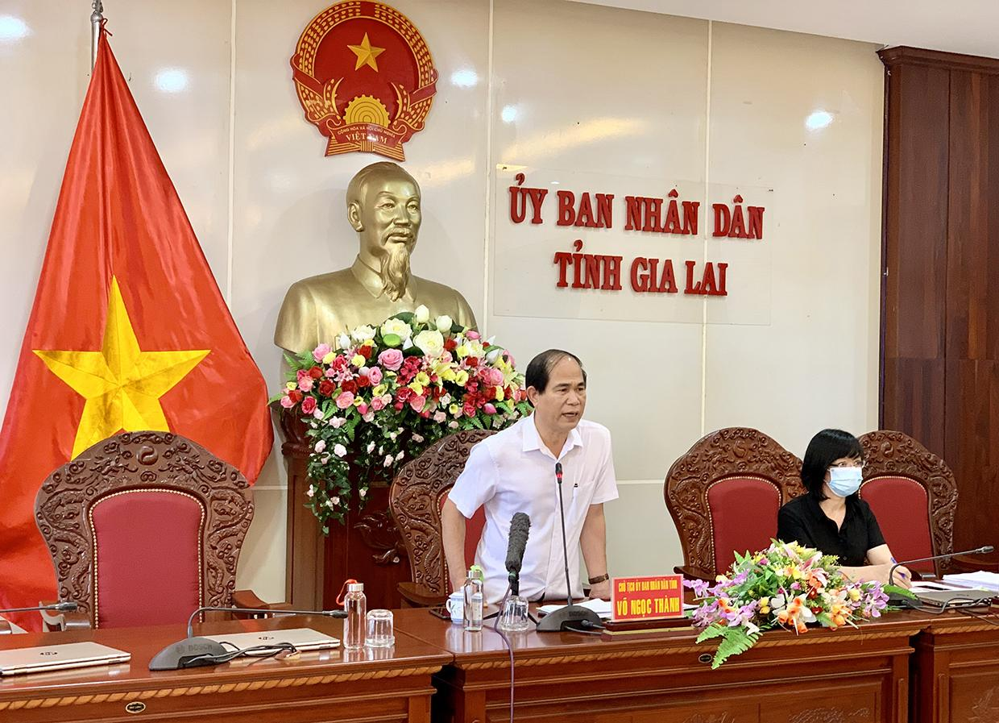
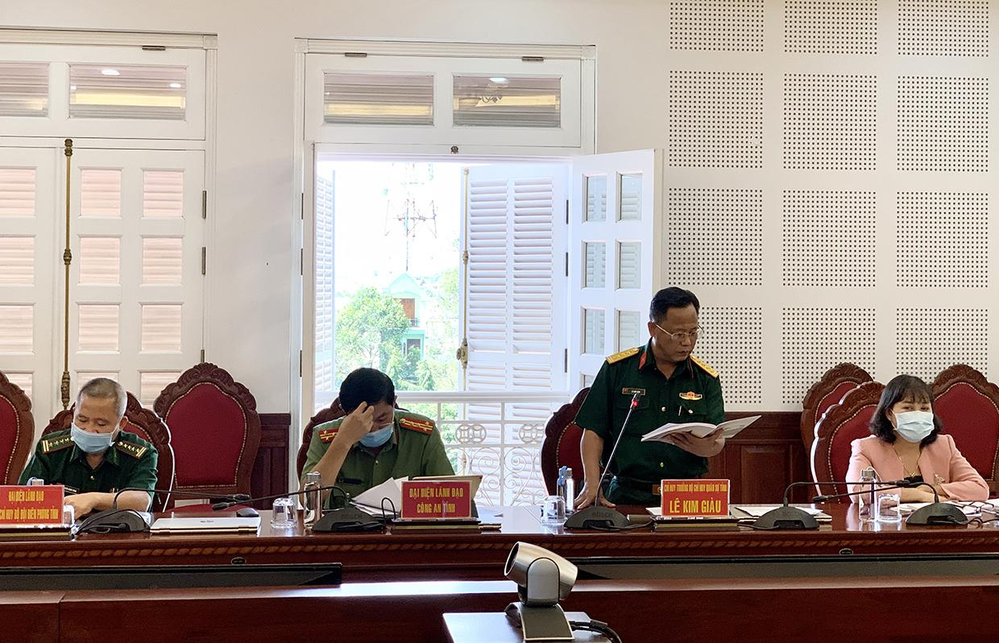

Chủ tịch UBND tỉnh Võ Ngọc Thành: Không để tình trạng một người lơ là làm cả tỉnh vất vả
(GLO)- Chủ trì tại cuộc họp Ban Chỉ đạo phòng-chống dịch Covid-19 tỉnh sáng 17-8, đồng chí Võ Ngọc Thành-Phó Bí thư Tỉnh ủy, Chủ tịch UBND tỉnh, Trưởng ban Chỉ đạo phòng-chống dịch Covid-19 tỉnh-nhấn mạnh: Tỉnh Gia Lai cơ bản kiểm soát được tình hình dịch bệnh không để lây lan ra cộng đồng. Tuy nhiên, dịch Covid-19 vẫn đang diễn biến phức tạp. Vì vậy, các cấp, ngành cần nêu cao tinh thần trách nhiệm, kỷ luật, kỷ cương, không để tình trạng một người lơ là làm cả tỉnh vất vả.
Tham dự cuộc họp có Phó Chủ tịch UBND tỉnh Nguyễn Thị Thanh Lịch-Phó Trưởng ban Thường trực Ban Chỉ đạo phòng-chống dịch Covid-19 tỉnh, lãnh đạo các sở, ban, ngành, đơn vị là thành viên Ban Chỉ đạo tỉnh.
Cơ bản kiểm soát được dịch bệnh
Phát biểu mở đầu cuộc họp, Chủ tịch UBND tỉnh Võ Ngọc Thành đánh giá: Với sự nỗ lực của các cấp, ngành và cả hệ thống chính trị, tỉnh Gia Lai cơ bản kiểm soát được tình hình dịch bệnh không để lây lan ra cộng đồng. Các ca nhiễm mới hầu hết trong khu cách ly tập trung, có 1 số trường hợp tái dương tính, dương tính sau khi hết thời gian cách ly tập trung; vấn đề này cần phải đánh giá lại để có biện pháp kiểm soát chặt chẽ, siết chặt các lỗ hổng. Dịch vẫn đang diễn biến phức tạp, có nguy cơ bùng phát bất cứ lúc nào. Vì vậy, các cấp, ngành cần nêu cao trách nhiệm, kỷ luật, kỷ cương, không để tình trạng một người lơ là, cả tỉnh vất vả.
| Quang cảnh cuộc họp Ban Chỉ đạo tỉnh sáng 17-8. Ảnh: Như Nguyện |
Theo Sở Y tế, từ ngày 28-5-2021 đến sáng 17-8, toàn tỉnh phát hiện 403 ca nhiễm SARS-CoV-2. Đến sáng 17-8, có 25 trường hợp đã xuất viện theo đúng quy định, hiện còn 378 trường hợp đang cách ly, điều trị tại Bệnh viện dã chiến tỉnh, Bệnh viện 331, Bệnh viện Lao và Bệnh phổi tỉnh, Bệnh viện Y dược cổ truyền và Phục hồi chức năng tỉnh, Trung tâm Y tế huyện Ia Pa. Các trường hợp trên hầu hết là công dân đi về từ các địa phương có dịch.
Phó Giám đốc Sở Y tế Nguyễn Đình Tuấn cho biết: Đến nay, Gia Lai đã kích hoạt 1 bệnh viện dã chiến và 3 bệnh viện điều trị Covid-19 trên địa bàn TP. Pleiku và 1 bệnh viện cách ly, điều trị Covid-19 tại Trung tâm Y tế huyện Ia Pa. Bổ sung thiết lập Bệnh viện điều trị Covid-19 tại Trung tâm Y tế huyện Đak Pơ với quy mô 80 giường, Bệnh viện dã chiến điều trị Covid-19 với quy mô 250 giường (Trường Cao đẳng Gia Lai cơ sở 2) và Bệnh viện điều trị Covid-19 quân-dân y với quy mô 250 giường (Bệnh viện 15 thuộc Binh đoàn 15). Đồng thời, chỉ đạo Trung tâm Y tế huyện Ia Grai, Chư Prông chuẩn bị sẵn sàng điều kiện để tiếp nhận, cách ly, điều trị bệnh nhân Covid-19 khi các bệnh viện trên quá tải. Riêng Trung tâm Y tế huyện Đức Cơ chuẩn bị sẵn sàng tiếp nhận, cách ly, điều trị bệnh nhân Covid-19 khu vực biên giới. Về việc xây dựng Đề án Bệnh viện cấp cứu vùng, Bệnh viện Đa khoa tỉnh đã xây dựng xong Đề án “Tăng cường năng lực trung tâm cấp cứu, hồi sức tích cực vùng Gia Lai-Kon Tum điều trị người bệnh Covid-19 nặng”.
Đại tá Nguyễn Ngọc Sơn-Phó Giám đốc Công an tỉnh-thông tin: Riêng tại chốt kiểm soát phòng-chống dịch Covid-19 cầu 110 (huyện Chư Pưh), trung bình mỗi ngày có 850 lượt phương tiện và khoảng 2.500 lượt người vào tỉnh nên rất áp lực. Lượng người từ vùng dịch đang thực hiện giãn cách theo Chỉ thị số 16/CT-TTg của Thủ tướng Chính phủ tự ý về tỉnh những ngày gần đây tăng lên; gia tăng tình trạng xe “luồng xanh” chở người trái phép. Những ngày qua, lực lượng chức năng đã phát hiện, xử lý 14 trường hợp lợi dụng xe “luồng xanh” đưa người vào tỉnh. Hiện nay, các lực lượng tăng cường kiểm tra tất cả xe vào tỉnh và khi phát hiện thì xử lý nghiêm. Ngoài ra, hiện tượng nhiều công dân trốn về tỉnh qua các đường tiểu ngạch cũng gia tăng nên cần nghiên cứu tính toán để quản lý chặt chẽ tại các đường tiểu ngạch.
Xử lý nghiêm vi phạm trong phòng-chống dịch
Đánh giá về tình hình dịch bệnh trên địa bàn, Phó Chủ tịch UBND tỉnh Nguyễn Thị Thanh Lịch nhấn mạnh: Qua khảo sát đánh giá, các ổ dịch trong cộng đồng ở các địa phương đã được kiểm soát. Nguy cơ lớn nhất hiện nay là số ca dương tính trong khu cách ly tập trung, số ca tái dương tính và dương tính sau thời gian cách ly tập trung về giám sát tại cộng đồng. Nguy cơ lây lan dịch bệnh thứ hai là từ các công dân tự ý đi về từ vùng dịch đang thực hiện Chỉ thị 16. Vì vậy, cần tiếp tục giám sát chặt chẽ việc cách ly y tế tại nhà, giám sát di biến động công dân…; giám sát chặt chẽ người vào tỉnh. Đối với ngành Y tế, cần tổ chức phân tầng điều trị bệnh nhân Covid-19 gắn với việc khám và điều trị chăm sóc sức khỏe cho Nhân dân trên địa bàn.
Sau khi nghe các ý kiến phát biểu tại cuộc họp, Chủ tịch UBND tỉnh Võ Ngọc Thành kết luận: Về tổng thể, Gia Lai đang triển khai tốt trong công tác phòng-chống dịch, những vấn đề còn tồn tại, hạn chế thì nhanh chóng khắc phục ngay. Các văn bản chỉ đạo của Trung ương và của tỉnh đã quy định chặt chẽ, rõ ràng, tinh thần “ai ở đâu ở yên đấy”. Ngày 16-8, Phó Thủ tướng Vũ Đức Đam ký ban hành Công điện số 1081/CĐ-TTg của Thủ tướng Chính phủ về phòng-chống dịch Covid-19, trong đó nêu rõ: Không để người dân tự ý rời tỉnh, thành phố nơi đang thực hiện giãn cách về quê. Trường hợp cá biệt có người tự ý về quê, đã qua địa bàn tỉnh khác thì các tỉnh phải thống nhất việc tiếp nhận, quản lý đảm bảo an toàn. Trước tinh thần trên, tỉnh Gia Lai tiếp tục quán triệt tinh thần “ai ở đâu ở yên đấy” và thực hiện nghiêm chỉ đạo của Thủ tướng Chính phủ.
|  |
| Chủ tịch UBND tỉnh Võ Ngọc Thành phát biểu tại cuộc họp. Ảnh: Như Nguyện |
Theo Chủ tịch UBND tỉnh, những ngày qua, có trường hợp người dân tự ý từ các vùng dịch đang thực hiện giãn cách theo Chỉ thị số 16/CT-TTg về tỉnh bằng nhiều cách như theo xe “luồng xanh”, xe từ thiện, đi bộ, đi xe máy về tỉnh tạo ra nguy cơ lây nhiễm lớn… Vì vậy, đề nghị các ngành chức năng kiểm soát không để tình trạng này tái diễn, đối với các trường hợp vi phạm kiên quyết xử lý nghiêm.
Trong vấn đề quản lý trong khu cách ly, Chủ tịch UBND tỉnh Võ Ngọc Thành giao cho Bộ Chỉ huy Quân sự tỉnh cùng với các địa phương thực hiện nghiêm nguyên tắc “4 tại chỗ”: lực lượng tại chỗ, chỉ huy tại chỗ, phương tiện tại chỗ, hậu cần tại chỗ. Các khu cách ly khi đi vào hoạt động cần tổ chức tập huấn, hướng dẫn ngay từ đầu, có sự chỉ huy thống nhất trong vận hành, quản lý. Yêu cầu các khu cách ly không tiếp nhận đồ tiếp tế của người nhà công dân đang thực hiện cách ly. Đối với chốt kiểm soát phòng-chống dịch giao cho Công an toàn quyền quản lý, giám sát. Trong vấn đề giám sát, quản lý việc cách ly tại nhà, yêu cầu Ban Chỉ đạo phòng-chống dịch Covid-19 các huyện, thị xã, thành phố xử lý nghiêm những trường hợp lơ là, tắc trách trong quản lý, giám sát. Đối với những xe “luồng xanh” chở người trái phép khi phát hiện kiên quyết xử lý nghiêm, thu hồi thẻ "luồng xanh".
|  |
| Đại diện Bộ Chỉ huy Quân sự tỉnh tham gia ý kiến tại cuộc họp. Ảnh: Như Nguyện |
Chủ tịch UBND tỉnh Võ Ngọc Thành yêu cầu rà soát các khu cách ly tập trung, chuẩn bị khai giảng năm học mới, có biện pháp dự phòng cho khai giảng; tổ chức tốt công tác khử khuẩn, vệ sinh môi trường các khu cách ly trước khi bàn giao lại cho ngành Giáo dục và Đào tạo. Về công tác tiêm chủng vắc xin phòng Covid-19, các đơn vị phải công khai, minh bạch; lưu ý tiêm vắc xin cho các lực lượng tuyến đầu đã tiêm mũi 1 tiếp tục được tiêm mũi 2, không để quá thời gian tiêm và lãng phí vắc xin. Đề nghị ngành Y tế có kế hoạch tiêm chủng chi tiết, cụ thể, ứng dụng công nghệ thông tin trong triển khai tiêm chủng, đăng ký tiêm chủng qua mạng để an toàn và giảm bớt áp lực cho người tiêm. Chủ tịch UBND tỉnh Võ Ngọc Thành cũng lưu ý đảm bảo các điều kiện chăm sóc sức khỏe cho các y-bác sĩ, lực lượng tham gia phòng-chống dịch, có sự hỗ trợ về điều kiện, phương tiện, vật chất cho công tác phòng-chống dịch và có đề xuất khen thưởng, động viên kịp thời cho lực lượng tuyến đầu chống dịch.
NHƯ NGUYỆN